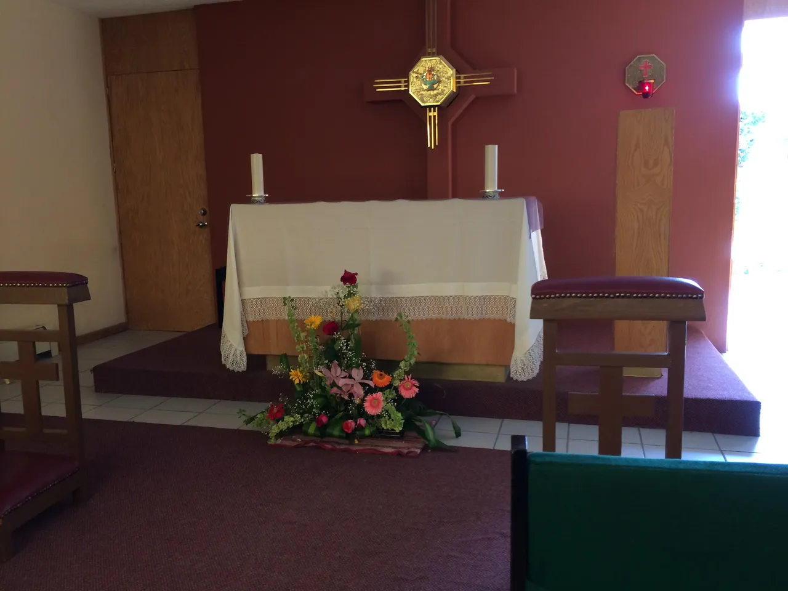

Vida en la escuela

Las canchas de basquet
Fue construida el 30 de septiembre del 2000
las canchas de basquet son el lugar principal donde se juegan los partidos de campeonato.

La capilla.
Fue construida en el año 2000.
es el lugar donde hacemos la horaciones en las mañanas

monumento a la madre Trinidad.
Fue construido en 1948.
es la estatua en conmemoracion a la madre Trinidad fundadora del coleguio